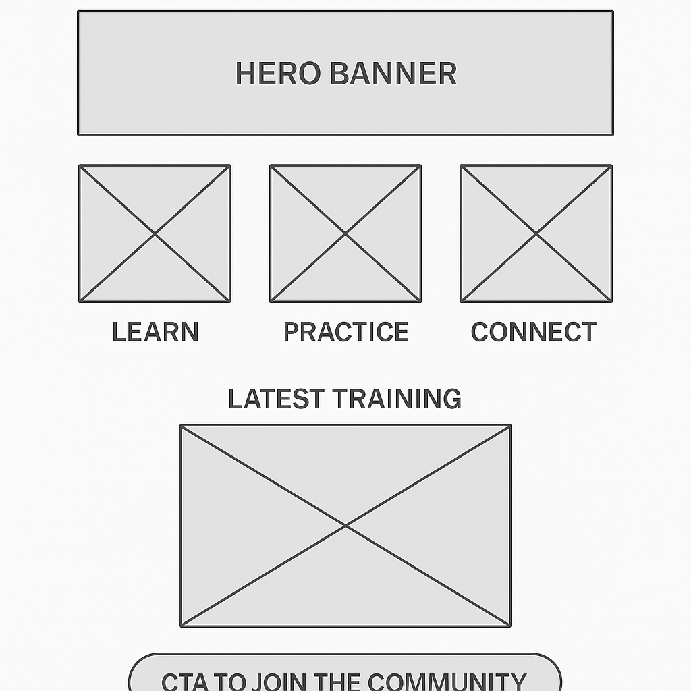
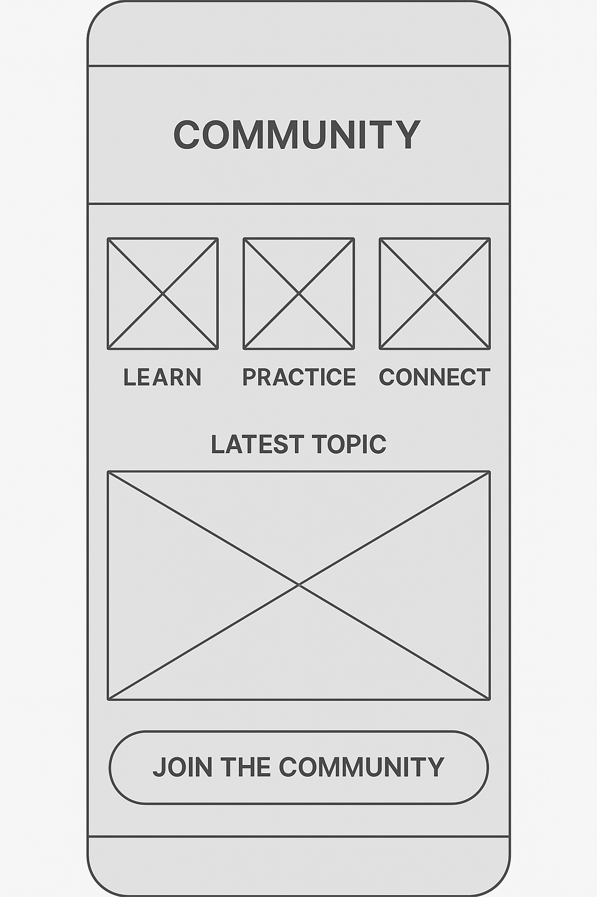

Overview
Purpose
Build a personal hub to share training plans, drills, tactics, and resources that help beginner players and amateur coaches improve technique, fitness, and game IQ in soccer.
Audience
Spanish- and English-speaking soccer enthusiasts—players, grassroots coaches, and parents looking for simple, practical guides, live/virtual workshops, and a supportive community.
Branding
Website Logo
Logo stored at /images/logo.png.
Style Guide
Color Palette
| Primary | Secondary | Accent 1 | Accent 2 |
|---|---|---|---|
Typography
Heading Font: IM Fell French Canon SC
Paragraph Font: Lato
Normal paragraph example
Soccer Crew shares short drills, printable practice sheets, and tactical tips. Content is practical, visual, and designed for busy players and coaches.
Colored paragraph example
Join the community to access beginner-friendly drills, live sessions, and feedback on your technique and game plan.
Navigation
Site Map
Content
Home page
Why Soccer Crew Exists. Soccer Crew exists to help beginners and amateur coaches feel confident on the field. Many players want to improve their control, passing, and shooting, but they do not know where to start or how to practice in a smart way. At the same time, many parents or grassroots coaches are asked to run a training session without having any formal coaching background. This site gives them simple, clear plans they can follow. Each visit to Soccer Crew should make the game feel less confusing and more fun, so players and coaches can enjoy soccer instead of feeling lost.
Who This Site Is For. The main audience for Soccer Crew is beginner and intermediate players, new coaches, and supportive parents who want to help their children. The content is written in simple English and occasionally in Spanish so that people from different countries can understand the ideas. A young player can read a drill description and try it alone in a park. A busy coach can quickly print a session and use it that same evening. Parents who may not know much about soccer can still understand the goals of each activity and how to encourage their kids during practice.
Why People Will Come to the Site. People will come to Soccer Crew because they are looking for clear, step-by-step help instead of random social media clips. Visitors want to know how to warm up safely, what drills are best for their age, and how to organize a complete training session in 60 minutes or less. They also want to see how basic tactics work in real games, like how to defend as a team or how to create space in attack. Soccer Crew answers these questions with short explanations, diagrams, and printable practice plans that are easy to follow.
Questions the Home Page Will Answer. The home page will answer basic questions such as “What is Soccer Crew?”, “Is this site for my level?”, and “Where should I start?”. New visitors will see a simple explanation of the project and three main paths: Learn, Practice, and Connect. Under “Learn,” they will find key articles about dribbling, passing, shooting, and positions. Under “Practice,” they will see links to beginner training plans. Under “Connect,” they will learn how to join the community, participate in challenges, or ask questions. The home page gives a quick overview so visitors do not feel overwhelmed.
Images for the Home page


Training Plans & Drills (Page 2)
What Visitors Can Do on the Training Page. On the Training page, visitors can choose from different ready-made sessions and drills. They might filter content by age group, time available, or specific skill, like “first touch” or “finishing.” Each session will show a warm-up, a main drill, and a game at the end so players can apply what they learned. Visitors can download or print these sessions to take them to the field. They can also watch short video explanations or simple diagrams that show where to place cones and how players should move.
Information Needed to Use the Training Plans. To use the training plans successfully, visitors need to know a few basic details. They should understand how many players they have, how much time they can train, and what equipment is available, such as cones, balls, and goals. The site will help them by listing the required equipment and suggesting easy replacements when they do not have everything. For example, plastic bottles can replace cones. Each plan will also include recommended age ranges and difficulty levels, so users do not choose drills that are too hard or too easy for their team.
Images for the Training page


Community & Challenges (Page 3)
What Visitors Can Do on the Community Page. On the Community page, visitors can share their progress, ask questions, and get ideas from others. They might post a short message about a training session they tried and what worked or did not work. There may be monthly challenges, such as a “ball control week,” where members try a specific drill every day and share their results. Visitors can also find information about upcoming live or virtual workshops. These activities make learning more social, so players and coaches do not feel alone in their journey.
Why Visitors Will Choose This Community. Visitors will choose the Soccer Crew community instead of just following another big soccer page because the focus is on real beginners and real life situations. Many popular accounts show advanced skills that are not realistic for most players. Soccer Crew keeps drills simple, uses clear language, and answers basic questions without making people feel ashamed. The community celebrates small wins, like learning to pass with the weak foot or organizing the first team practice, so members feel supported and motivated to keep going.
How Soccer Crew Stands Out from Other Sites. Soccer Crew stands out because it combines clear training plans with a friendly community and a bilingual spirit. Instead of offering only text, the site uses visuals, short tips, and downloadable resources that can be used on the field right away. Because the audience includes both English and Spanish speakers, the site can connect players and coaches from different countries who share the same love for soccer. Over time, visitors will see Soccer Crew not just as a website, but as a small team that grows with them as they improve their skills and understanding of the game.
Images for the Community page


Wireframes
Create three wireframes (one per page) and place screenshots below.
Home
Hero banner, 3 value cards (Learn / Practice / Connect), latest training, CTA to join the community.
Training
Filterable list of sessions, detail preview card, sign-up CTA.

Community
Intro text, member highlights, upcoming events, newsletter signup.
